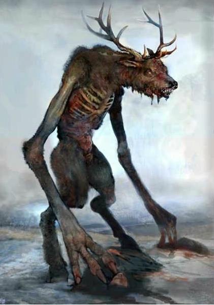

Bigfoot
Often called protectors of the Forest, sasquatch will often roam alone unless a great threat comes upon their forested homes. If such a threat surfaces, the night is filled with forlorn wails and howls, signaling the gathering of an elusive army. A band of sasquatch will violently protect their home from any outside force until the threat is either driven out or destroyed. Their ambushes are swift and brutal. If an engagement somehow goes wrong for them, they flee into the woods and regroup. Sasquatch deeply respect the wildlife of their habitat and will care for them like a guardian or parent figure.
- High defense stats
- Can use primitive tools
- They can blend in the surroundings while in the forest
- Reduced speed and reflexes on open roads
- Knowledge passed down throughout generations makes them very smart.

Skunk Ape
The Skunk Ape is a large hairy, bipedal mammal that calls the Everglades home. Castings of their tracks confirm they have four toes. Male Skunk Apes stand up to 7 feet tall and can weigh more than 350 pounds. Females are considerably smaller, standing 5 – 6 feet tall and weigh 180 – 250 pounds. Both male and female are covered with reddish-black fur. Skunk Apes are strong in number, they travel in groups of ten and more which are often called troops.
- Better travel times
- Large troops give exceptional buffs
- Have a debuff when alone
- Have lower intelligence due to traveling lifestyle
- Male ape can only be a warrior
- Female ape can only be a gatherer

Wendigo
The Wendigo is tall and gaunt to the point of emaciation, its desiccated skin pulled tightly over its bones. With its bones pushing out against its skin, its complexion the ash gray of death, and its eyes pushed back deep into their sockets the wendigo skulks in the northern forests and mountains of the realm. Using it's mimicry, wendigo can emit a child's wail, call for help or sounds of wild game to bait it's prey away from the group or settlement. Wendigo stalks a group to learn voices of it's members before luring them to their doom. Though, in desperation, wendigo can confront a group head-on. In such case it tries to stun as many enemies it can with it's roar, snatch most defenseless member of a group and retreat to a safer place to murder and devour it's victim.
- Can devour enemies to restore health
- Have extraordinary predatory skills
- Highy adaptive
- Can only eat meat, can't recruit gatherers
